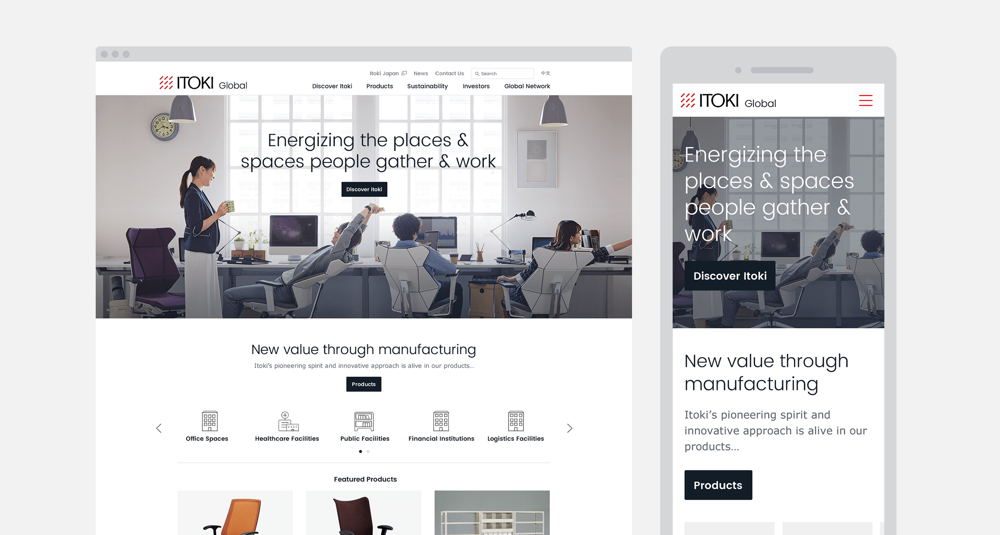
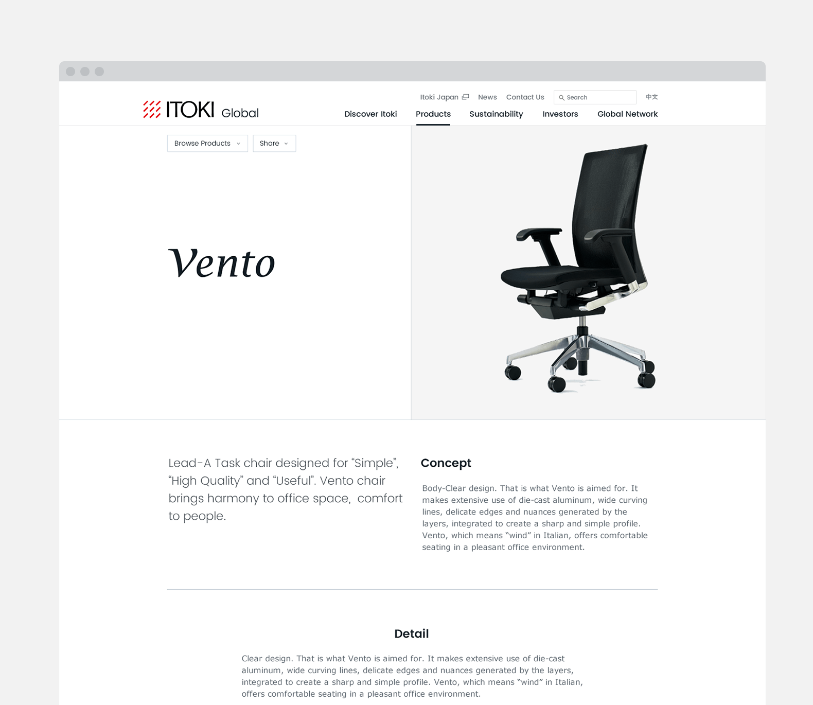
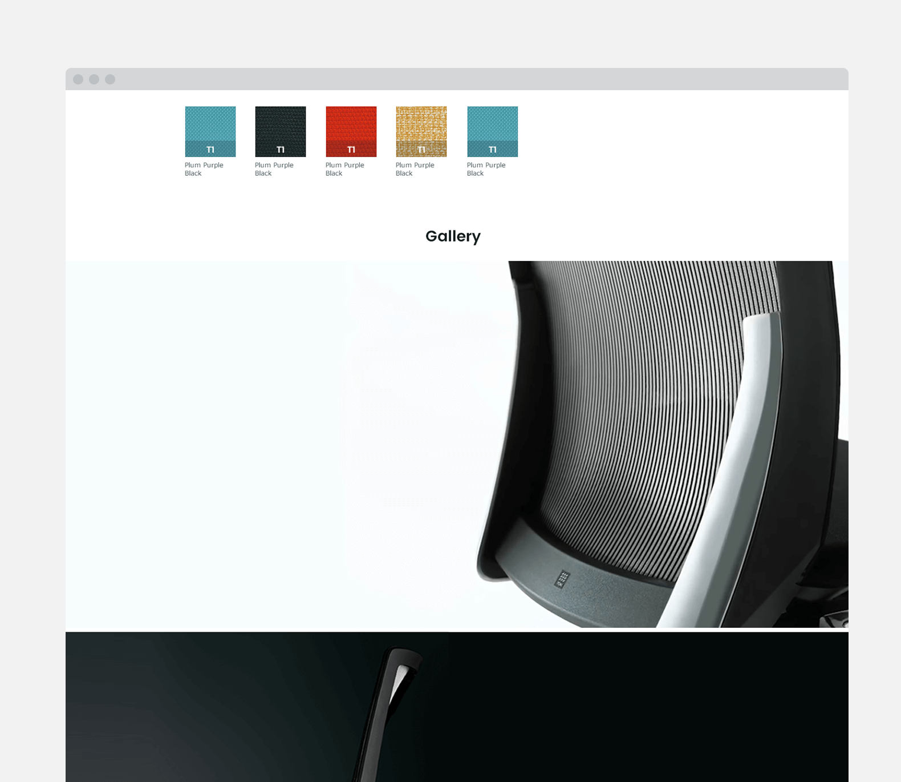
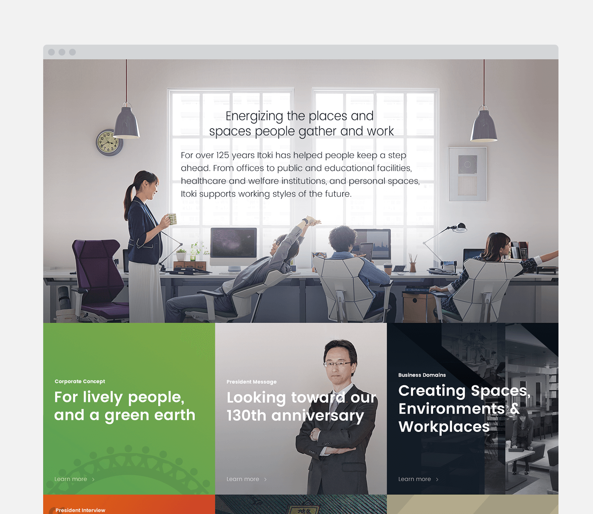

ITOKI
2016
IA & UI Design
2016
IA & UI Design
魅力を最大限に
アートディレクション、UIデザイン、一部コーディングを担当。
創業から120年を超える家具メーカーがアジアを中心に海外進出を本格的に行う。本案件は進出先の国々にむけてITOKIの認知拡大を目的としたリニューアルプロジェクトとなります。リニューアル以前は簡素な内容で製品の魅力を伝えるには十分ではない情報量でした。また翻訳の精度が低く、コミュニケーションデザインが行われていない状況でもありました。ユーザビリティではコンテンツ同士の遷移導線がなく分断されている状況であったため、サイト内を回遊できずユーザーの離脱が目立つ状態でもありました。
リニューアルにあたりサイトのターゲットが見直され、海外投資家に向けたサイトを構築することになりました。サイトに訪れた際に海外投資家がどの情報を見れば投資につながるかを協議しながら策定し、離脱を防ぐための導線設計に取り組みました。とはいっても解決策としてはシンプルで、製品ページにはCSRコンテンツを、IRページには代表者メッセージを、会社情報には海外の協力会社の紹介ページなど、コンテンツからコンテンツへリレーできるように導線を配置していきました。

トップ
サイトのトーンとして装飾は徹底的に排除し、製品やコンテンツが引き立つようにデザインをおこないました。美しさが際立つ製品ラインナップでフォトジェニックなビジュアルが多いため、効率的に製品の魅力にフォーカスされるように、あえて製品写真を少なくしユーザーの記憶にとどまりやすい情報量にまとめました。

製品詳細・メインビジュアル

製品詳細・コンテンツ

会社紹介
会社紹介では、企業としての顔である代表者をフレンドリーな印象を持っていただくため適所にコンテンツを配置。また製品の使用シーン(環境)にフォーカスしたビジュアルをメイン配置。オープンな企業姿勢と使用シーンから想起するITOKIのモノづくりの姿勢のアピールにつながりました。